Time to break away from tradition, from mainstream storytelling.
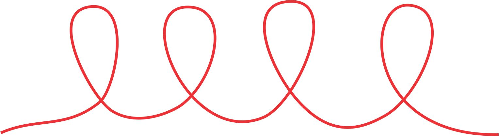
Instructor notes
What I mean by this image I used to gradually move from convention to transgression over 15 weeks. Now I loop.
20th Century
And The Rebellious Individual
In The West
200 Years ago
Premodern – Reality Is Created by God
100 Years ago
Modernism – Reality Is Created by People
50 Years ago
Postmodernism - Reality Is Created by Culture
The Century That Built Video Games
1970’s
Instructor notes
I challenge you to devise over the next 10 years what characterizes your era (century) and your game making.
Modernism and Modernity
 Salvador Dalí, The Persistence of Memory (1931).
Salvador Dalí, The Persistence of Memory (1931).
Modernism
Farago: “Modernism an umbrella term to cover a focus on innovation that occurred across almost all forms of human expression in the early 20th century, most notably in the fields of literature, music, art, film and literature”.
Modernity
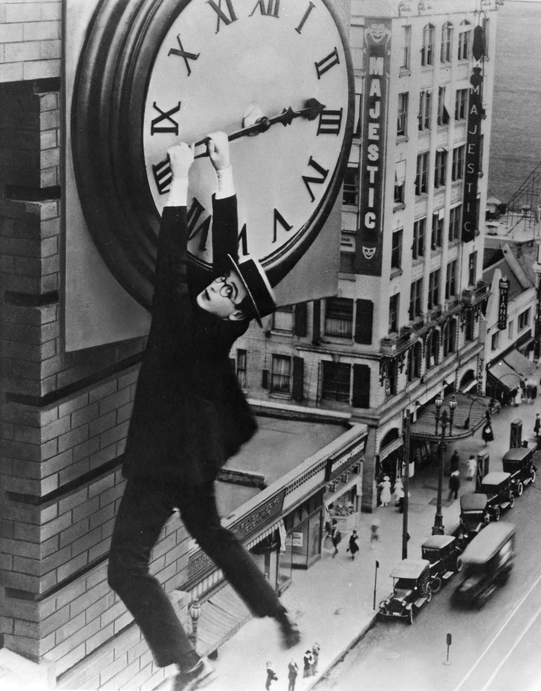
Harold Lloyd hanging from the clock in Safety Last! (1923).The economic and technological growth of the period between 1870 and 1970 — was fueled by unique and unrepeatable innovations (electricity, sanitation, the combustion engine) whose successors (like information technology) have not had the same impact.
Before we get to cool art, modernity gave us: Phone calls. Sewage treatment. Light at night. Travel by car, etc.
Novelty and Difficulty
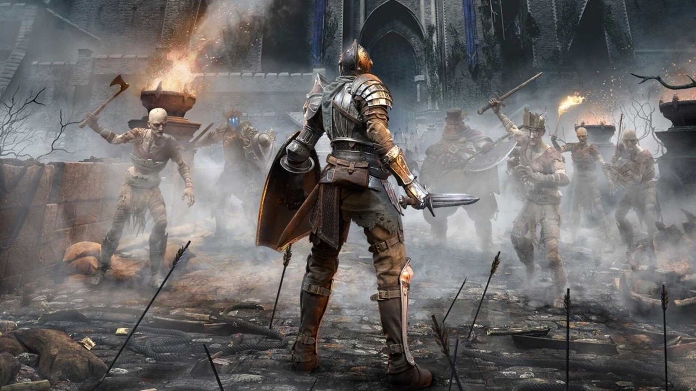
The First Condition — Difficulty
Difficulty: Configuration Difficulty: Interpretation (we’re talking about this one)
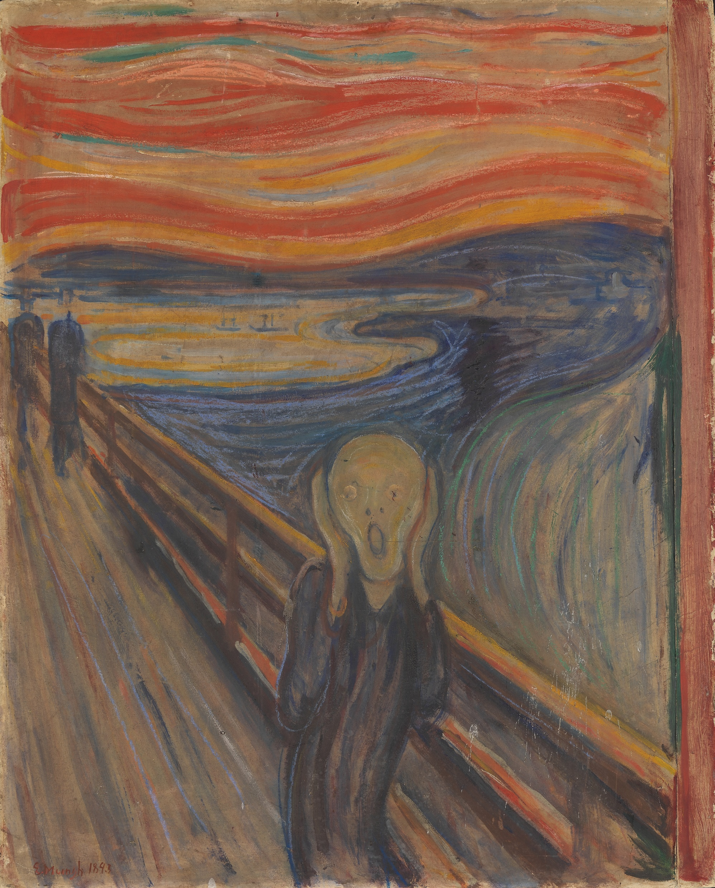
Edvard Munch, The Scream (1893).Not Bloodborne difficulty, but…
… the task of interpretation
Not looking for a solution, but an interpretation.
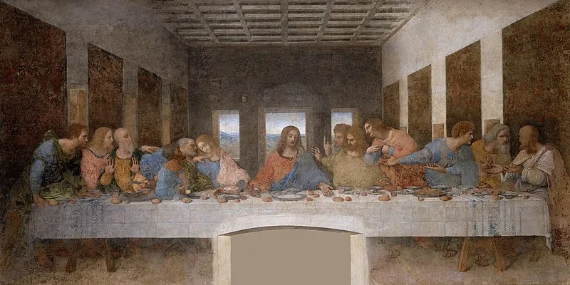
Leonardo da Vinci, The Last Supper (1495–1498).Pre-Modern(ism) Easy to Interpret.
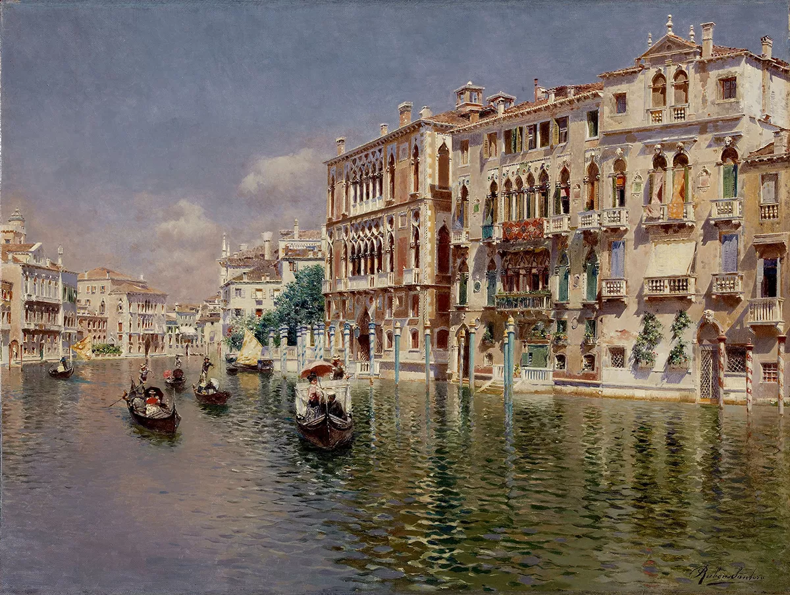
Your job as an artist was no longer to glorify the king or the church, nor to imitate as faithfully as possible the appearance of the outside world.
You think AI is upsetting for artists today?
Camera confronted realism. The camera inspired artists to move on.
Interpretation Before Video Games
Before Video Games, We Interpreted Art
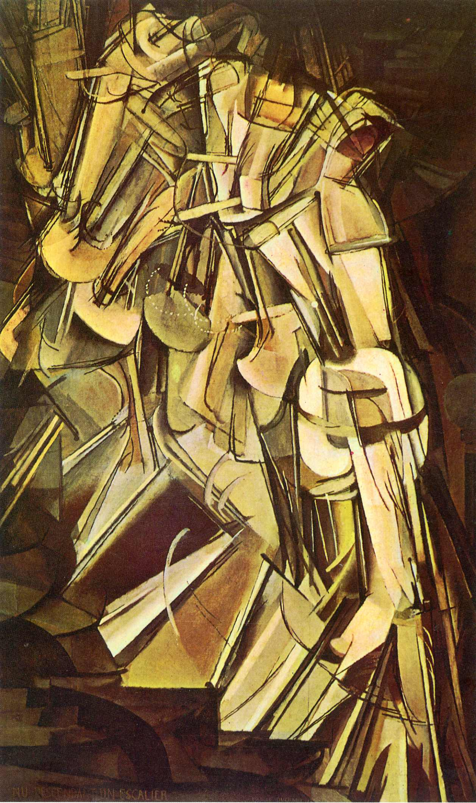
Marcel Duchamp, Nude Descending a Staircase, No. 2 (1912).Albert Einstein.
*Sigmund Freud.
Before your time (20th century) Before video games, we did: INTERPRETATION
I like to think about what was happening in culture when a medium “comes out”. I’m not comparing cinema to games. I’m offering that a medium’s timing and context can be revealing.
Cinema was affected by people such as Freud, Duchamp, and Einstein.
Further, the mind is a puzzle that warrants interpretation.
What a wonderful time for cinema to “come out”.
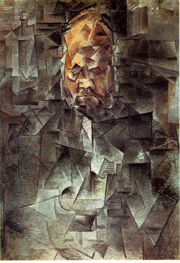
Picasso
Cubism
In the 20th Century, your point of view….
Cubism embraced: the artist’s starting point was the recognition that there was no true perspective from which we could objectively view and understand what we were looking at.
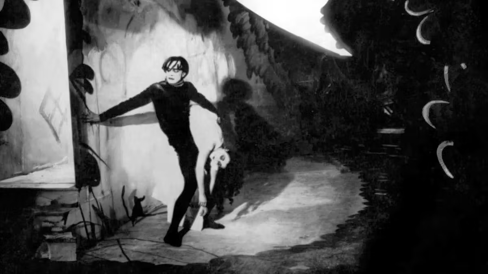
The Cabinet of Dr. CaligariExpressionism on the other hand makes a choice with perspective. Nevertheless, it admits to being subjective.
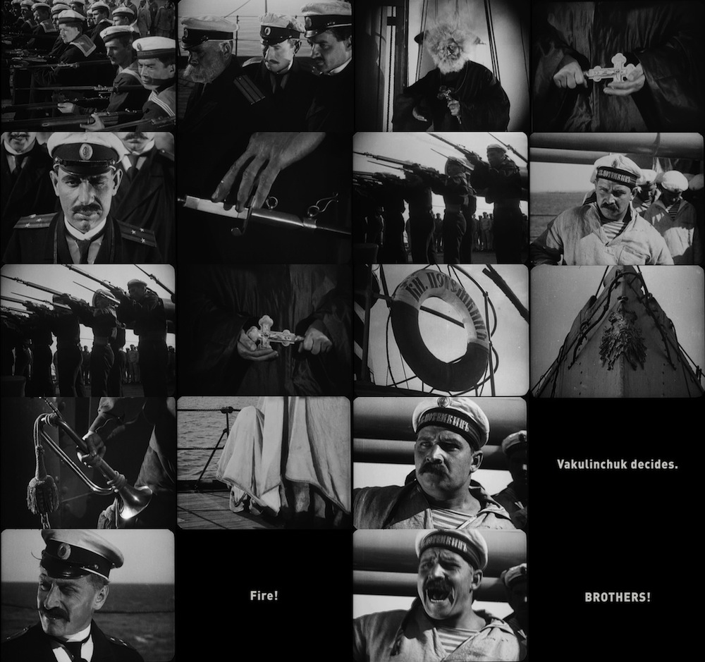
Battleship Potemkin (1925) — montage.Cinema, as a recorded medium provided a new perspective on time.
The Kuleshov Effect
1.8
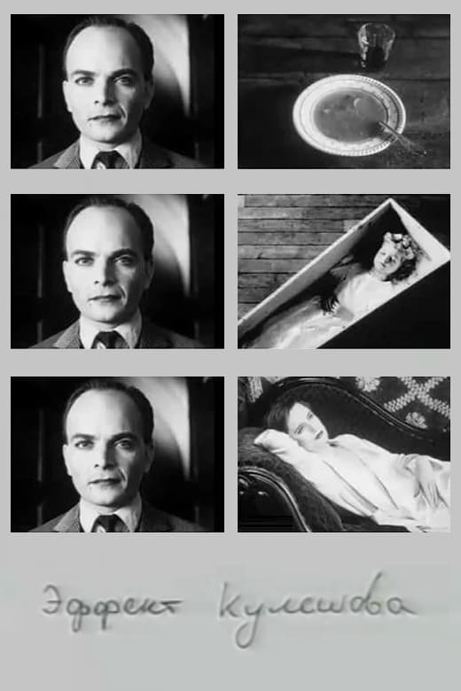
The Kuleshov effect.Paris, I Love You (29:52)
Paris, I Love You — a near-expressionless face.
Kuleshov Effect
Time, Space, and Point of View
Marcel Duchamp, Nude Descending a Staircase, No. 2 (1912).
Multiple Angles (Space)
But Also
Multiple Moments (Time)
Painting could represent multiple moments, sure, but cinema ran with such possibilities.
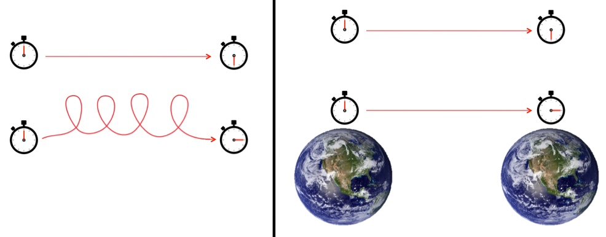
Moving clocks run slower than stationary ones.Speaking of time………………………………………………..Einstein!
Einstein and 4th dimension. –Time is relative. “Moving clocks are slower than stationary ones.”
The Mind as a Puzzle
The Mind
The Conscious and Unconscious
(Let’s interpret: what is the main character thinking?)
Freud’s is an essential figure in the 20th Century. We can thank him and Carl Yung for psychoanalysis, and perhaps by extension, therapy. Most of his specific ideas are passe, for example his interpretations themselves, such as penis envy and so on. But something rings true with his distinction and relationship between the conscious and unconscious mind. The mind, a person’s thoughts, memories and personality, are a puzzle to be solved, to be interpreted. Let us ponder if the unconscious explains most of our behavior. And next: it takes work to get to know ourselves. We have repressed thoughts, from prior experiences. They cause unexpected behavior, and dreams, no doubt. This is familiar. Movies seem to work the same way. This is rich stuff for the filmmaker. As viewers, it seems to be our role to interpret the motivation of the characters, the possibilities for outcomes, and indeed what the film means.
[In traditional stories], the dramatic question [gets answered at the end]. We’ll leave the story with that lovely emotional sense that something, perhaps just beyond the level of conscious comprehension, has been completed.
Modernist stories are different.
Storr, Will. The Science of Storytelling: Why Stories Make Us Human and How to Tell Them Better (pp. 128-129). Abrams Press. Kindle Edition.
Instructor notes
Read aloud: Modernist stories are different. Whilst they’re built from the same dance between surface drama and subconscious change, their causes and effects are often left ambiguous. Character change occurs, but it’s less clear how these changes are being triggered by the drama and what message we’re supposed to glean from them. More space is left for the reader to insert their own interpretations into the text.
Franz Kafka’s short story ‘The Passenger’ shows an enigmatic movement of cause and effect between consciousness and subconscious. It tells of a man on a tram feeling uncertain about himself and his place in the world. He becomes lost, for a moment, in the abstract physical details of a woman waiting to disembark – the position of her hands, the shape of her nose, the shadow her ear makes against her skull. These conscious observations trigger something deep in his subconscious. He asks, ‘How is it that she is not astonished at herself, that she keeps her mouth closed, and expresses nothing of any wonderment?’ The reader is invited to ponder how one level connects to the other and thereby bring them into harmony.
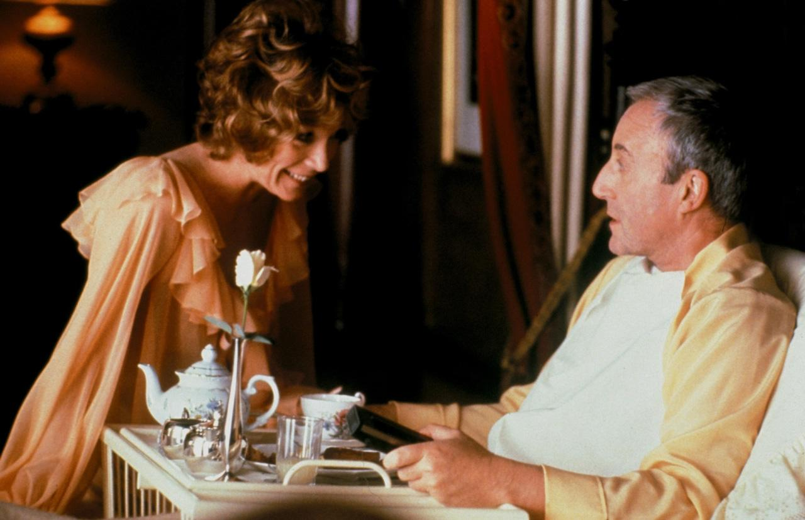
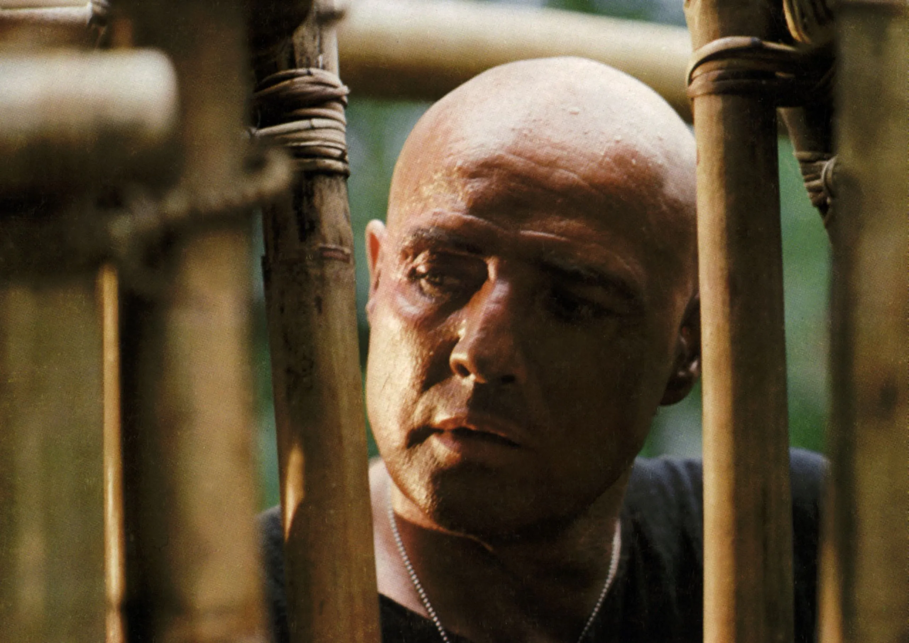
**Cinema does: The mind is a puzzle
Cinema is the artform of time, dreams, and point of view.
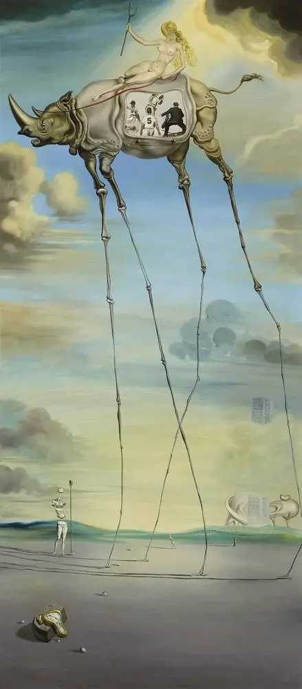
*Salvador DalíDreams (More On This Another Week)
Main Characters
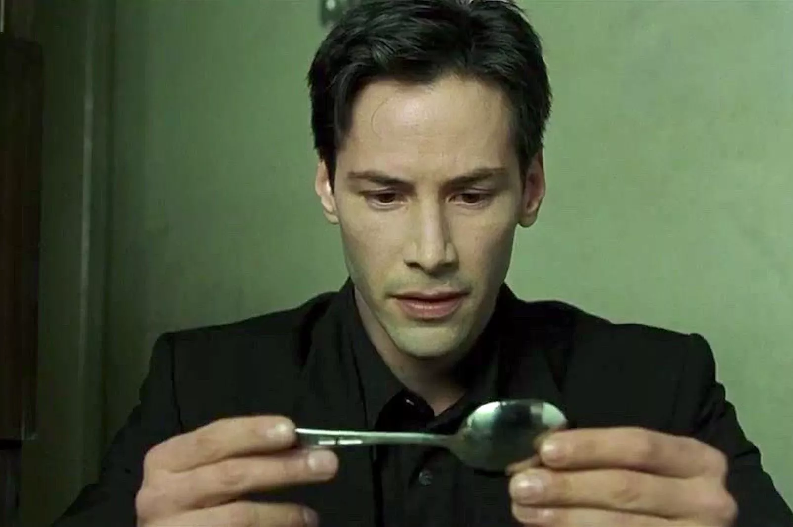
The Matrix (1999) — there is no spoon.The 20th century is often about the individual and that person’s search for something.
Jackson Pollock at work.
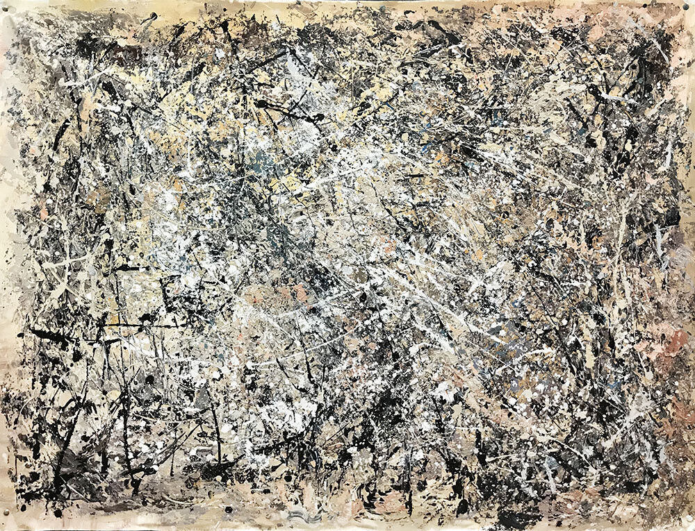
A Jackson Pollock drip painting.The Auteur (Not God)
“Human Made” We are seeing the internal of the individual GENIUS.
# Reminder:
200 Years ago
Premodern – Reality Is Created by God
100 Years ago
Modernism – Reality Is Created by People
50 Years ago
Postmodernism - Reality Is Created by Culture
The Second Condition — The New
The Other Condition of Modernism: The New
Jason Farago: A work of art demonstrates its value through its freshness.
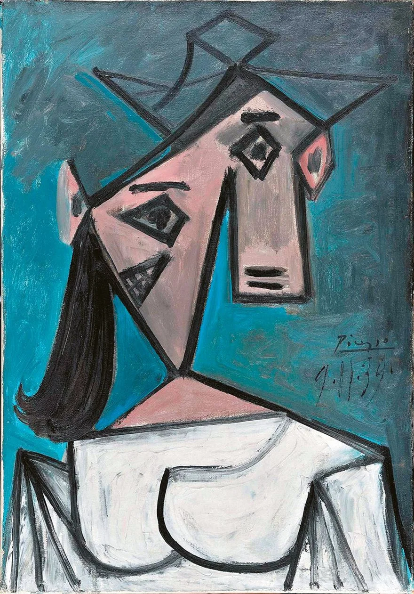
Pablo Picasso.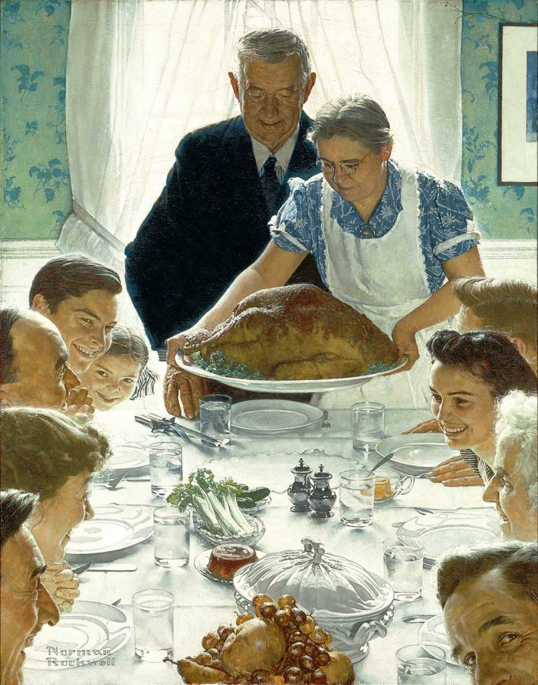
Norman Rockwell, Freedom from Want (1943).New and not new. High art vs low art.
*Piet Mondrian
Farago: the creators who most decisively marked the history of art, again and again, described their work as a search for a new language, a new style, a new way of being.
Mondrian. No content.
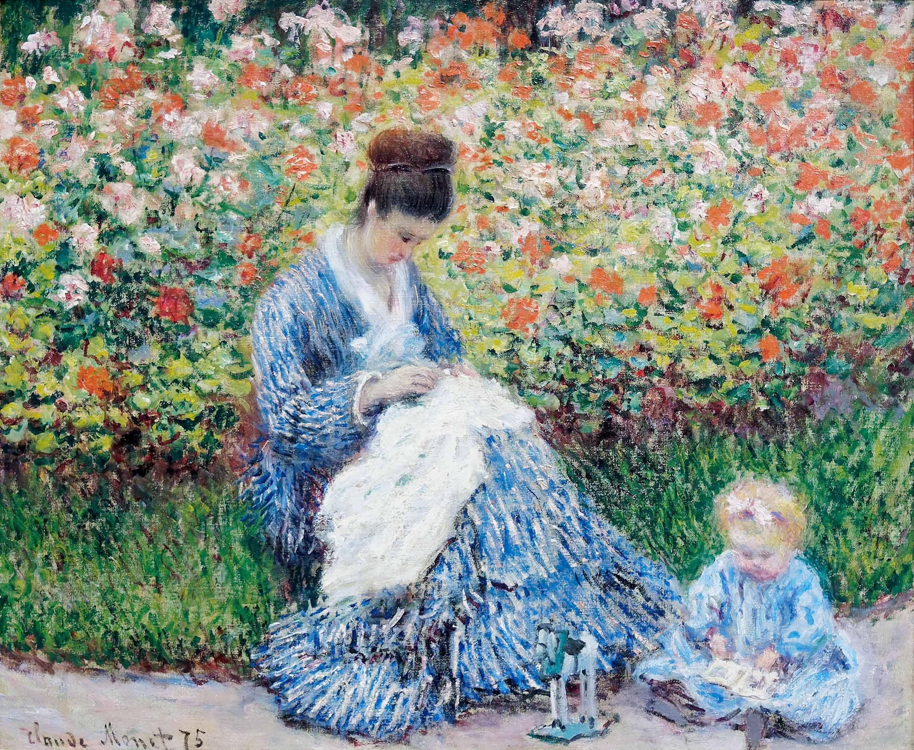
*Claude Monet.New Approach
Not
New Content
Often content was often not new. Models and sunsets.
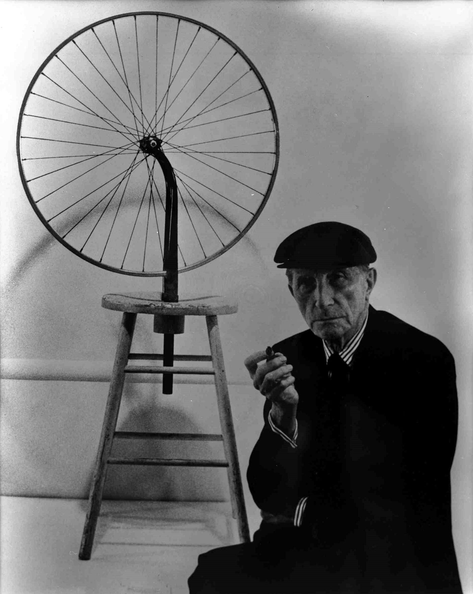
Marcel Duchamp with Bicycle Wheel (1913) — a readymade.New?
Duchamp’s Readymades
TRANSGRESSION
Then he played chess for decades.
Avant Garde and Mainstream
Dangerous · Avant Garde · Experimental · Innovative · Mainstream
New and Difficult
Some people were kept out of the mainstream.
Others chose the Avant Garde.
John Cage, 4’33” (1952) — the score.
Twin Peaks (1990, 2017).
The Traveler
The character is not an agent of power. A sleepwalker.
P. Adams Sydney continues, “The protagonist wanders through a potent environment toward a climactic scene of self-realization. The stages of his progress are often marked by what he sees along his path rather than what he does.”
When contrasting experimental film Hollywood narrative, Parker Tyler says, “The chief imaginative trend among experimental or avant-garde filmmakers is action as a dream and the actor as a somnambulist.”
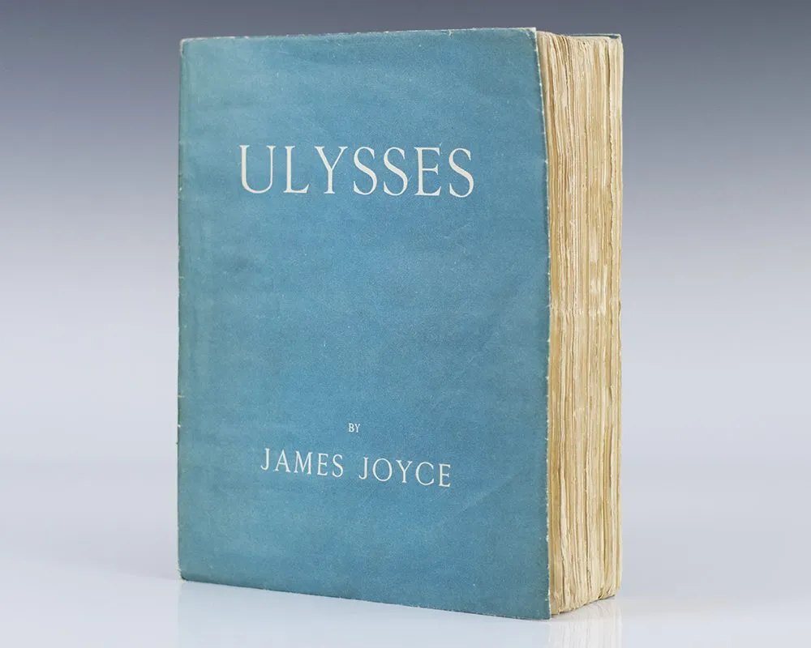
James Joyce, Ulysses.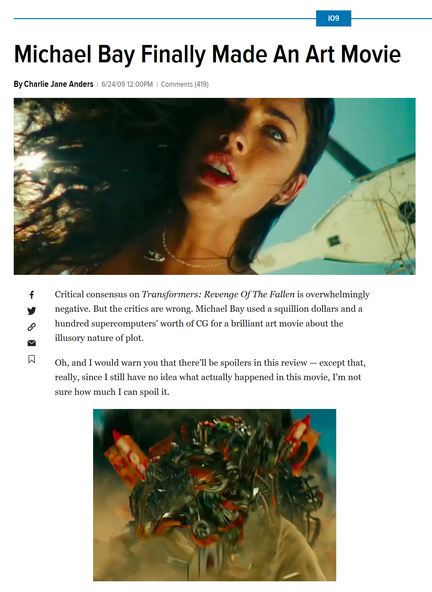
*“Michael Bay Finally Made An Art Movie” *The author is playing a coy role, arguing this is a brilliant art movie about the illusory nature of plot.
Dangerous · Avant Garde · Experimental · Innovative · Mainstream
“Think Different”
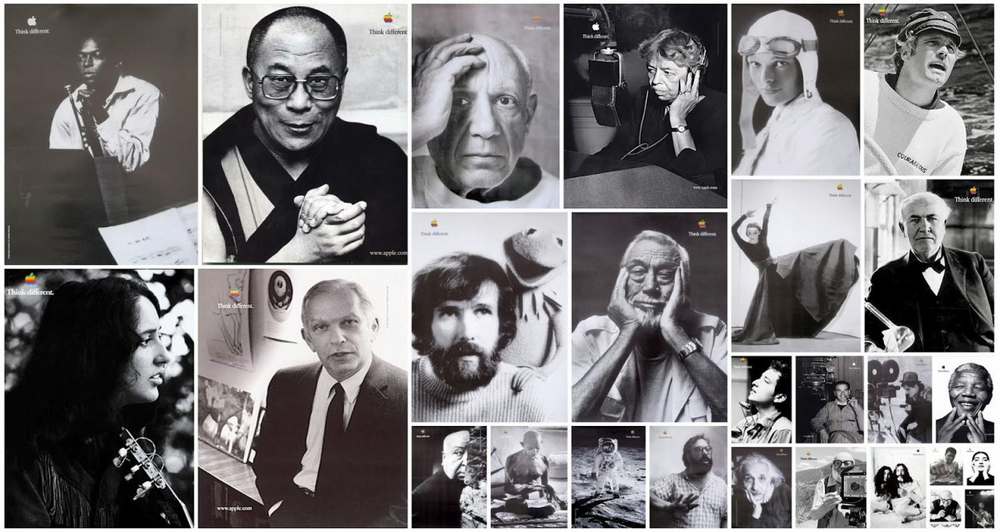
Apple’s “Think Different”Transgression Gets Commodified
Later we’ll study Postmodernism - Reality is Created by Culture
Street art near the Tea Building in London’s Shoreditch.
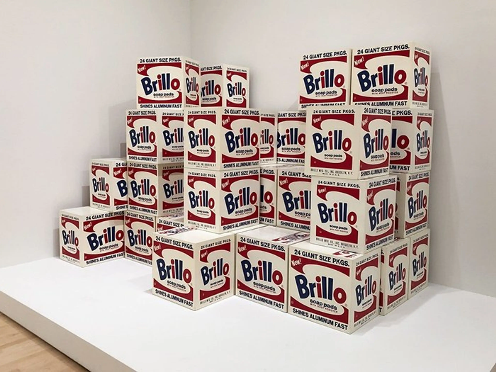
Andy Warhol, Brillo Boxes (1964).Andy Warhol
Warhol ran with this commodification.
Innovation = Conformity
So, in the 21st Century, Is The New not new?
Blizzard Entertainment.
Twitch Plays Pokémon.
The Auteur Human Made
The Network Crowd Made
![[week5.1-the-3-is.jpg]] *The 3 i's — Inventive, I Just Like It, It's Done.*
The Traveler
Your assignment.
The character is not an agent of power. A sleepwalker. P. Adams Sydney continues, “The protagonist wanders through a potent environment toward a climactic scene of self-realization. The stages of his progress are often marked by what he sees along his path rather than what he does.”
When contrasting experimental film Hollywood narrative, Parker Tyler says, “The chief imaginative trend among experimental or avant-garde filmmakers is action as a dream and the actor as a somnambulist.”
Unfinished Swan
Stanley Parable
1917
## Related